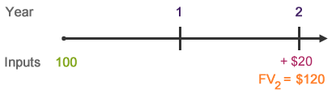

Compound Interest
To state it simply, compound Interest is when interest earns interest.
Compounding takes place on some sort of regular schedule. When solving word problems, you'll look for key words that indicate how often interest is compounded:
- annually (1 time per year)
- semi-annually (2 times per year)
- quarterly (4 times per year)
- monthly (12 times per year)
- daily (365 times per year or 366 times per year in a leap year)
If there is no specifically stated compounding schedule, you should assume interest is compounded annually.
Simple Interest
The alternative to compound interest is simple interest, which means that interest is only paid once at the end of the investment.
Simple interest = principal * interest rate * time
Example:
20 = 100 * 10% * 2
The timeline of events looks like this:
